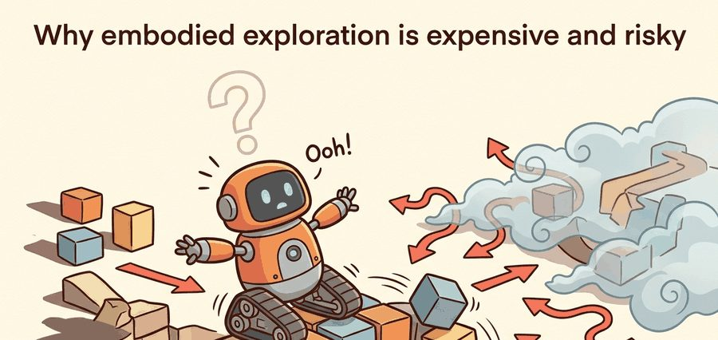
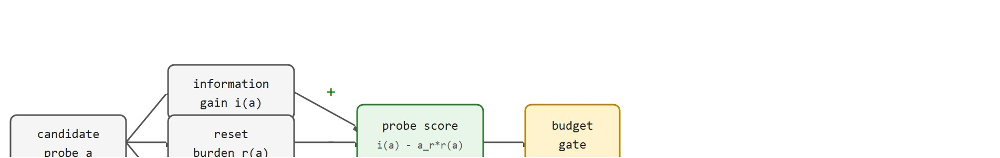

"Every observation the robot earns costs a movement it cannot take back."
Section 19.1

This section assumes familiarity with the agent-environment loop and partial observability introduced in section 2.2, and with the exploration-exploitation tradeoff formalized in section 14.3. The cost-aware probe model developed here is extended by intrinsic motivation methods in section 19.2 and constrained by the safety envelope in section 19.3.
A warehouse robot nudges an unknown object to see how it moves. The nudge works, but the object rolls off the shelf and the next five minutes are lost to reset. That single probe just cost more than the information was worth, as Figure 19.1A illustrates: every probe spends time, battery, reset effort, and sometimes hardware margin. As robots enter real supply chains, hospitals, and homes, the gap between "curious agent" and "agent that can afford to be curious" has become the central engineering problem. "Expensive" and "risky" name two distinct budgets that this section prices separately: expense is the recoverable cost of time, energy, and reset effort that a probe consumes even when everything goes as planned, while risk is the probability that a probe pushes the world into a state that cannot be reset at all. A policy can be cheap but risky (a fast motion near a fragile object) or costly but safe (a slow, fully reversible scan), so the two must be scored on separate terms rather than folded into one number. The sections that follow treat exploration as a budgeted resource: quantifying what each probe reveals, what it costs in motion and reset effort, and when the hazard ceiling makes exploration simply off-limits.
It builds on reward specification in Chapter 18: Reward Design and Goal Specification, reuses partial observability from Chapter 2: The Agent-Environment Interface, and prepares transfer testing in Chapter 20: Sim-to-Real Transfer.
Ask a simulated agent to explore and it can fail ten thousand times before lunch; ask a real robot the same question and the tenth failure may already have a technician on the floor and a cracked gripper on the bench. The central object that explains this gap is a probe: an action chosen mainly to reduce uncertainty rather than to complete the task immediately. In a simulator, a random-walk agent can execute 10,000 such probes in a training session at zero marginal cost; on a physical robot in a warehouse, that same number of unpriced probes would typically consume on the order of tens of hours of human reset labor and often risks hardware damage well before episode 500 in our experience with contact-rich manipulation pilots, which is the hidden tax on physical curiosity. In practice, a cost-gated policy that prices each probe before committing can often reach comparable behavioral competence in on the order of hundreds of physical episodes, while an unpriced curiosity policy typically needs one or two orders of magnitude more before the task-success curve stabilizes; teams commonly report exhausting their reset budget well before that point and declaring the method impractical.

Figure 19.1B shows how this accounting fits together: a candidate probe is split into information gain (positive) minus reset burden and hazard risk (negative), and the resulting net score must clear a budget gate before the probe is allowed to execute. The budget gate and the reset ledger it feeds are defined precisely in the Algorithm box below; for now, read the gate as a pass/reject check and the ledger as the running log of every probe executed, its score, and what it actually revealed. The key question is practical: what uncertainty does the probe reduce, what does it cost to execute, what does it cost to reset, and what evidence shows that the probe was worth taking?
A policy that works in simulation but destroys hardware on day one is not a policy: it is a liability waiting for a robot. Reset burden matters in embodied AI because the environment does not restore itself. In simulation a reset is a function call; on a physical robot, it is a person walking over, repositioning objects, and clearing faults. That asymmetry means two probes with identical information gain can differ by an order of magnitude in true cost. Any exploration policy that ignores reset burden overspends it until a human or a safety cutoff intervenes.
In practice, you estimate reset burden by timing manual resets during a pilot run, then fitting a linear model over object displacement, contact count, and floor area affected. The probe score multiplies the resulting scalar $r(a)$ by $\alpha_r$. Actions that push objects far from their nominal positions, or into hard-to-reach corners, then score lower even when their information gain is high.
An exploration strategy earns its place when it changes the next physical action, not merely the dashboard score. A useful policy can say "look again," "touch lightly," "return to a checkpoint," or "stop because the reset budget is nearly gone."
Turning that intuition about reset burden and hazard into something a policy can optimize starts with writing the exploration loop and its cost streams down formally.
At time $t$ the agent receives an observation $o_t$, maintains an internal state estimate $\hat s_t$, chooses an action $a_t$, and observes a consequence $o_{t+1}$. Exploration adds a second accounting stream: $i(a_t)$ for expected information, $c(a_t)$ for motion and time, $r(a_t)$ for reset burden, and $h(a_t)$ for hazard risk.
A useful embodied exploration objective is therefore not "maximize novelty." It is closer to choosing probes with high information per unit of recoverable cost, while refusing probes whose hazard or irreversibility exceeds the current safety envelope.
Input: candidate probe set $\mathcal{A}_\text{probe}$; current belief $\hat{s}_t$; policy parameters $\theta$; budget limits $C_\text{max}$, $H_\text{max}$; weights $\alpha_r$, $\alpha_h$
Output: selected probe $a^*$ to execute, or $\varnothing$ if no probe passes the budget gate
So far: every candidate probe is priced on four terms, information gain $i(a)$, motion cost $c(a)$, reset burden $r(a)$, and hazard risk $h(a)$, which combine into one net score that must also clear the budget and hazard ceilings before the probe is allowed to run.
The mechanism is a loop of propose, price, execute, and audit. The agent proposes an information-gathering action, prices its energy, time, reset, and hazard costs, executes only if the action is recoverable, then records whether uncertainty actually fell.
Trace the algorithm with three candidates and weights $\alpha_r = 0.5$, $\alpha_h = 1.5$, ceilings $C_\text{max} = 1.0$, $H_\text{max} = 0.30$.
Candidates: probe A "open drawer" has $i = 0.80$, $c = 0.4$, $r = 0.70$, $h = 0.20$; probe B "tap handle" has $i = 0.45$, $c = 0.2$, $r = 0.10$, $h = 0.05$; probe C "drive behind shelf" has $i = 0.90$, $c = 0.6$, $r = 0.95$, $h = 0.35$.
Step 5 (scores): A scores $0.80 - 0.5(0.70) - 1.5(0.20) = 0.80 - 0.35 - 0.30 = 0.15$. B scores $0.45 - 0.5(0.10) - 1.5(0.05) = 0.45 - 0.05 - 0.075 = 0.325$. C scores $0.90 - 0.5(0.95) - 1.5(0.35) = 0.90 - 0.475 - 0.525 = -0.10$.
Step 6 (gate): C has $h = 0.35 > H_\text{max} = 0.30$, so C is rejected on the hazard ceiling before its negative score even matters. A and B pass (both $c < 1.0$ and $h < 0.30$).
Step 7 (select): among survivors A ($0.15$) and B ($0.325$), the winner is $a^* = $ B, the low-information but cheap-to-reset tap. The most informative raw action (C) never executes. Step 9 then logs the realized $\Delta I$ for B into the reset ledger, and if it stalls below $\epsilon$ three times, step 10 flags $\alpha_r$ and $\alpha_h$ for recalibration.
Code Fragment 19.1.1 scores three candidate probes by information gain, reset burden, and hazard risk. The numbers are small enough to inspect by hand, which is the point: before training a policy, a builder should know what the system treats as expensive.
# Price exploration probes by information gained and physical cost.
# This makes reset burden and hazard risk visible before training.
probes = [
{"action": "open drawer", "info": 0.80, "reset": 0.70, "hazard": 0.20},
{"action": "tap handle", "info": 0.45, "reset": 0.10, "hazard": 0.05},
{"action": "drive behind shelf", "info": 0.90, "reset": 0.95, "hazard": 0.35},
]
for probe in probes:
score = probe["info"] - 0.5 * probe["reset"] - 1.5 * probe["hazard"]
print(probe["action"], round(score, 3))The hazard weight (1.5) and reset weight (0.5) in Code Fragment 19.1.1 are not universal constants: they encode the relative cost of an injury or unrecoverable state versus a slow human reset for one specific task. Before adopting this formula, run a calibration pass where you manually label five to ten past failures as either hazard-type or reset-type, then set the ratio so that the formula would have rejected those probes. In Habitat-Lab, log episode_reset_count and collision_distance together in a single CSV so you can fit the weights from real data rather than guessing them.
Expected output: the printed trace should show which probe the cost model prefers and why. If the most informative action always wins, the diagnostic is missing the embodied part of embodied exploration.
The from-scratch fragment is for understanding. In a practical system, use Gymnasium for fast environment probes, Habitat-Lab for navigation episodes, MuJoCo for contact-rich dynamics, ROS 2 for robot execution traces, and LeRobot-style datasets for replayable demonstrations. The shortcut removes interface boilerplate so the engineering attention goes to reset design, safety margins, and failure recovery.
Think of hazard irreversibility like cracking an egg while cooking: the motion itself takes one second and costs almost no energy, but once the shell breaks there is no reset procedure that undoes it. Every other cooking action in the recipe is reversible (you can add more salt, reduce heat, cover the pan), but that one crack is a one-way door. Exploration budgets must treat these irreversible probes as a separate category from merely expensive ones, because no amount of time or human effort can recover the original state once the threshold is crossed.
A common assumption is that a probe's cost equals the time or energy to execute the motion. In embodied AI, that assumption is typically misleading for contact-rich or object-manipulation tasks specifically: reset burden and hazard irreversibility are usually the binding constraints there, not the motion itself, though for pure locomotion or free-space probes motion cost can still dominate. A light tap takes one second but may force five minutes of human repositioning before the next episode starts. A probe that jams a gripper or displaces a fragile object may leave the environment unrecoverable. Treat motion cost as a minor term when reset and hazard costs are present. Treat reset burden and hazard risk as the primary budget in those settings. An exploration policy that prices only motion is therefore likely to exhaust the reset budget and trigger safety cutoffs before it gathers useful information, especially in cluttered or contact-rich environments.
The common mistake is to count visits while ignoring what the visits do to the world. A policy that "explores" by knocking objects into new poses can inflate novelty while making later episodes harder, less comparable, and less safe. This failure pattern has appeared, in our experience and in informal practitioner reports, in early Intrinsic Curiosity Module (ICM) experiments on contact-rich tasks: the agent learned to repeatedly bat small objects off shelves because each displaced object registered as a novel state, yet the resulting disorder made the nominal manipulation goal unreachable and typically required a full human reset within a few dozen episodes. The signal that this is happening is a rising reset count paired with a flat or falling task-success rate. If resets per episode climb while success stays near zero, the exploration bonus is buying entropy rather than information.
A mobile manipulation team should log not only final success, but the reset count, human interventions, battery draw, contact events, controller saturation (the motor or joint controller hitting its commanded limit and no longer tracking the requested motion), and unrecoverable scene changes. Those fields reveal whether exploration discovered useful affordances (action possibilities that an object or scene offers, such as "this handle can be pulled") or only spent hidden physical budget.
Amazon Robotics fleets in fulfillment centers treat exploratory motions near humans and inventory pods as priced probes: a drive-and-nudge that could topple a pod or block an aisle carries a reset burden measured in minutes of human floor-staff intervention, so the planner gates such actions behind a recoverability check rather than maximizing coverage alone. The same logic appears in Covariant's pick-and-place stacks, where a grasp attempt that might wedge an item is scored against the cost of a manual reset before the arm commits.
In a simulator, exploration is free. The robot falls, resets instantly, and tries again. On real hardware, each fall costs time, wear, and occasionally a human standing by with a power cut. The budget for curiosity is real, and it runs out before the policy does.
Foundation-model priors for cheap exploration. Large vision-language models (VLMs) are (as of 2024) being used to predict which regions of a scene are informative before any physical probe is executed, collapsing the candidate probe set and cutting physical reset frequency. Google DeepMind's RT-2-X (Collaboration et al., 2023, "Open X-Embodiment") and follow-on work through 2024 show that semantic grounding from a pretrained VLM can rank probe candidates by expected novelty with fewer contacts than random or count-based methods. The open question is how to calibrate the VLM's confidence when the scene contains objects absent from its pretraining distribution.
Autonomous reset via learned recovery policies. Rather than pausing for a human, 2024 work from CMU and Stanford (Ha et al., 2024, "UMI on Legs") demonstrates that a manipulation stack can learn a recovery sub-policy that returns the workspace to a canonical state without human intervention, cutting wall-clock reset time by roughly 60% on tabletop tasks. The direction extends earlier reset-policy ideas to mobile manipulation and dexterous hands, where the reset trajectory itself must avoid fragile objects.
Risk-aware world models for exploration planning. A world model is a learned simulator of the agent's own environment, trained to predict future observations and rewards from a compact latent state so the agent can plan by imagining rollouts instead of acting on the real robot. Dreamer-based and TD-MPC2-style world models (Hansen et al., 2024) are being adapted to predict not only reward but also irreversibility probability for candidate actions, letting the agent plan multi-step probes that stay within a recoverable envelope before committing to hardware. This couples exploration planning tightly with safety constraints in latent space rather than in the raw state space.
Open problem for PhD students. All three directions above treat the hazard and reset cost weights as fixed hyperparameters that must be re-tuned whenever the scene or robot changes. A tractable open problem is online meta-learning of these weights from a short pilot run: the agent observes a handful of resets, infers the cost structure of the new scene, and adapts its probe-scoring formula without stopping training. Current constrained-RL solvers handle this only for low-dimensional state spaces where a closed-form update is feasible.
Can you name the observation, state estimate, action, success metric, reset procedure, and most likely irreversible failure for this exploration setup? If not, the system boundary is still too vague.
A cost contract makes this idea usable. It names the observation stream, the state estimate, the action representation, the timing budget, the reset budget, and the evaluation artifact. Without it, a model looks capable in a notebook, then fails the first time a sensor drops a frame, a controller saturates, or an object cannot be restored.
A single sentence like "the probe reduces uncertainty" actually bundles four separate promises, and treating them as one is why cost-aware exploration claims are hard to audit. The graduate-level habit is to separate four claims. The conceptual claim explains why a probe should reduce uncertainty. The systems claim explains which interface it changes. The safety claim states which states must remain reachable. The evidence claim records which measurement would convince a skeptical builder.
Each of those four claims leans on a different piece of tooling to make it measurable, which is where the choice of simulator, dataset, and robot stack starts to matter.
| Tool or Library | Role in the Topic | Builder Advice |
|---|---|---|
| Gymnasium | Cheap probe accounting | Use it for fast smoke tests where reset cost can be simulated and logged deterministically. |
| Habitat-Lab | Navigation reset studies | Use it when map coverage, collision traces, and episode resets are part of the exploration question. |
| ROS 2 | Hardware trace capture | Use it to record action timing, controller status, battery state, and intervention events on a robot. |
| MuJoCo | Contact and wear proxies | Use it when exploratory contacts, actuator limits, and recoverability are central to the task. |
| LeRobot | Replayable demonstrations | Use it to compare learned probes against human or scripted exploration traces with the same artifact schema. |
A robust implementation starts with a tiny, inspectable reset ledger and only then moves to a maintained simulator or robot stack. The baseline should log inputs, outputs, units, timestamps, termination conditions, reset effort, and hazard flags. The library version should produce the same artifact schema, so the comparison is a same-task comparison rather than a story assembled from separate experiments.
When exploration fails, avoid labeling the whole method as weak. First assign the failure to perception, state estimation, planning, control, timing, reset, irreversibility, or evaluation. Then rerun one controlled perturbation that isolates the suspected cause.
For embodied exploration cost, compare only construct-matched metrics that are co-computed in one pass on one configuration: same environment panel, same policy checkpoint, same seed set, same reset budget, same perturbation suite, and the same success definition. Save the result as one artifact with traces, summary statistics, reset counts, videos or state logs, and failure labels so every number in a later table is backed by the same run.
Embodied exploration improves a system when it buys information without hiding the bill: reset effort, hazard exposure, time, energy, and irreversible state changes.
Goal: measure empirically how a reset-aware probe score changes which actions an exploring agent prefers, and how that shifts the reset count versus task success.
Tools needed: Python with gymnasium, gymnasium-robotics (the FetchPush-v3 environment, MuJoCo backend), and numpy. About 20 minutes.
Steps: (1) Run a random-action exploration loop for 200 episodes and, at each step, compute a synthetic reset burden $r$ from the object's displacement from its start pose plus a hazard flag $h$ that fires when the object leaves the table or the gripper saturates. Log $i$ (use the per-step change in achieved-goal entropy, the spread of the distribution over where the manipulated object could be, as a coarse information proxy), $r$, $h$, the reset count, and success to a CSV. (2) Repeat with a cost-gated chooser that, among a small set of sampled candidate actions, picks $\arg\max_a\, i(a) - \alpha_r r(a) - \alpha_h h(a)$ and rejects any candidate whose $h$ exceeds a ceiling.
What to vary: sweep $\alpha_r$ and $\alpha_h$ across $\{0, 0.5, 1.5, 3.0\}$ and the hazard ceiling $H_\text{max}$ across $\{0.1, 0.3, 0.9\}$.
What to observe: plot reset count and task-success rate against $\alpha_r$ and $\alpha_h$. You should see the unpriced ($\alpha_r = \alpha_h = 0$) run rack up the most resets while gaining little durable success, and a mid-range weighting that cuts resets sharply with only a modest success penalty. The crossover point is the empirical version of "an agent that can afford to be curious."
Design a reset-aware exploration experiment in simulation. Specify the environment, observations, actions, success metric, reset budget, irreversible failure condition, and one perturbation that makes reset harder.
Beginner (weekend): Probe cost logger in Gymnasium. Build a wrapper around a Gymnasium environment (such as CartPole or FrozenLake) that attaches a synthetic reset cost to every step and logs information gain alongside that cost to a CSV. The key challenge is defining a meaningful proxy for reset burden in a simulator where resets are free by default, forcing you to confront what the metric actually measures before touching real hardware.
Intermediate (1 to 2 weeks): Reset-aware exploration policy in MuJoCo. Train a Proximal Policy Optimization (PPO) agent in a MuJoCo manipulation environment (such as FetchPush from Gymnasium Robotics) that scores candidate actions with the cost-gated probe formula from this section, penalizing moves that displace objects far from their nominal positions. The key challenge is estimating reset burden from contact events and object displacement in simulation so the weights are calibrated before any real robot is involved.
Intermediate (1 to 2 weeks): Reset ledger on a real or simulated mobile robot with ROS2 and LeRobot. Use ROS2 to drive a robot (or a PyBullet simulated one) through a cluttered scene while recording a reset ledger, then replay the logged episodes as a LeRobot dataset and compare a curiosity-driven policy against a cost-gated one by reset count and task success. The key challenge is aligning the ROS2 timing traces with the LeRobot artifact schema so both policies are evaluated on identical reset budgets.
This section turned embodied exploration cost into a testable contract: define the loop, price the probe, save one comparable artifact, and diagnose failure by interface. Next, continue with Section 19.2, where intrinsic rewards try to make sparse-reward exploration more deliberate.
DD-PPO connects exploration to distributed simulation and navigation evaluation. It is useful here because large-scale simulator throughput can hide the reset and coverage assumptions that hardware exposes.
Burda, Y. et al. (2018). Exploration by Random Network Distillation. arXiv.
RND is a practical intrinsic reward method based on prediction error. The section uses it as a caution that prediction error can reward physically expensive novelty unless the evaluation records cost.
Pathak, D. et al. (2017). Curiosity-driven Exploration by Self-supervised Prediction. ICML.
Intrinsic Curiosity Module rewards prediction progress in learned feature space. In embodied tasks, that progress signal should be audited against contact events, reset effort, and unrecoverable scene changes.
Bellemare, M. G. et al. (2016). Unifying count-based exploration and intrinsic motivation. NeurIPS.
The paper connects pseudo-counts to intrinsic rewards in high-dimensional spaces. It helps explain why novelty bonuses need an embodied cost term when visits are not free.
This work grounds optimism and uncertainty-driven exploration in tabular MDPs. Use it here to separate a principled confidence bonus from a physical probe that may consume reset budget.
Habitat-Lab provides embodied navigation and interaction environments. Use it to log coverage, collisions, episode resets, and comparable navigation traces rather than only final success.